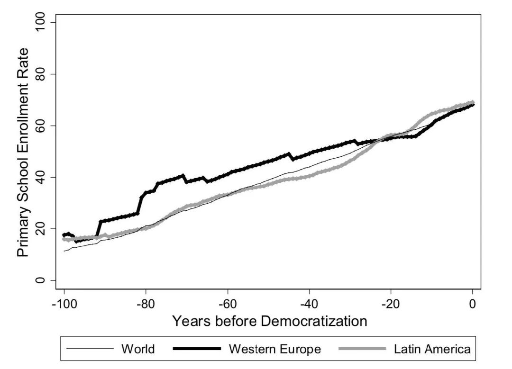
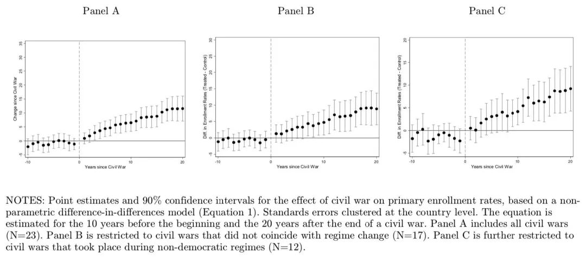
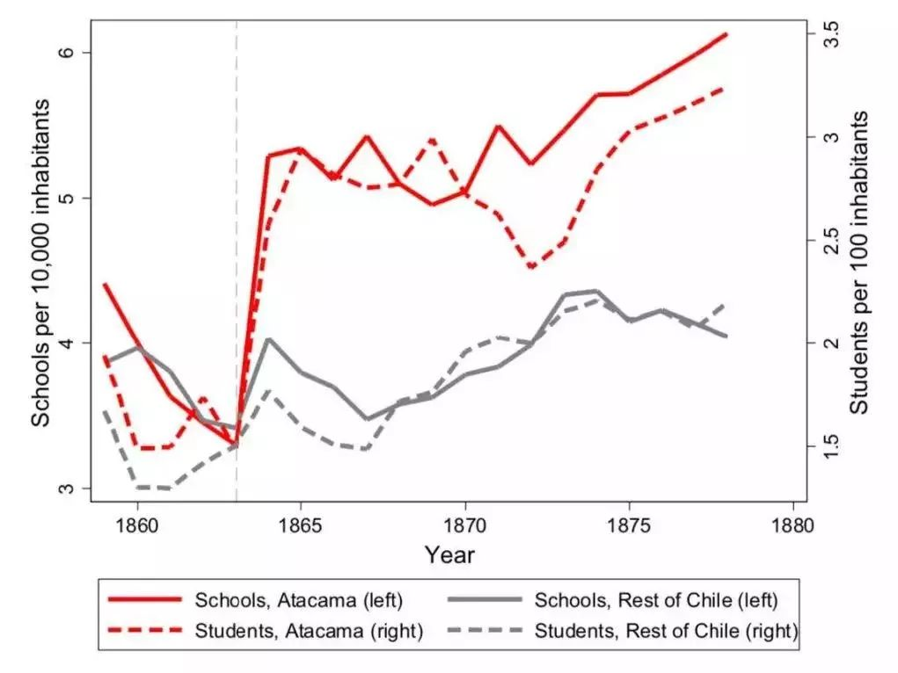
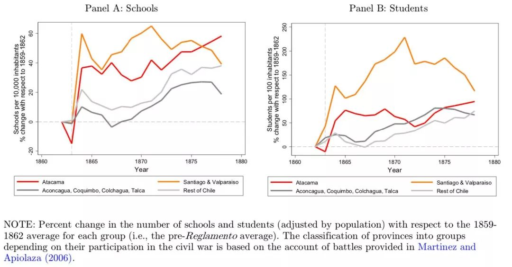

收录于合集
#历史政治学 58 个
#国家建构与国家发展 70 个
文献来源： Agustina S. Paglayan,“Civil War, State Consolidation, and the Spread of Mass Education,“Working Paper,2017（本文获得APSA 2018 Fiona McGillivray Award for the best Political Economy paper 大概会在顶刊上发表，本文也是作者专著的基础）
作者简介： Agustina S. Paglayan，斯坦福大学博士，加州大学圣迭戈分校（UCSD）政治学系、全球政策与战略学院合聘助理教授。个人网站参见：https://www.agustinapaglayan.com/
为什么一些政府比另一些政府提供了更多的公共产品？通过对拉美和欧洲国家的历史考察，本文解释了在缺乏公众压力且花费不菲的情况下，政府为何要普及初等教育。
过去20年来，政治经济学家常常把初等教育的普及看作为一种再分配的形式，它向贫困者提供了提升人力资本的可能。根据中位选民理论，一旦穷人有了投票权，那么教育的普及可能是由于选举的压力而非国家的目标(Baum and Lake 2003; Lindert 2004; Stasavage 2005; Ansell 2010; Gift and Wibbels 2014)。然而，如图一所示，国家控制的初等教育的出现却早于民主政体出现的时间。

图一
本文认为，初等教育的出现和普及并不主要是一种对穷人的再分配，而更多的是政治精英构建和巩固国家权力的工具。 本文不仅有助于在比较政治和政治经济学的领域内解释教育的普及，而且对国家能力、内战、威权政体合法性的来源、公共物品提供和发展政治经济学等领域有启示作用。
政治秩序和公众初等教育的普及
建立初等教育体系实际上是一件非常费力的事情。这要求政府在全国范围内建立学校，要雇佣符合国家目标的教师、编纂合适的教材。目前学界对于初等教育的普及主要有三种解释：扩散说、工业化说和战争说。
扩散说认为，初等教育体系作为现代民族国家的当然部分，随着现代国家的全球扩散而被全世界接受。然而这种理论无法解释，初等教育体系为什么一开始会出现，因此也没法很好解释初等教育体系出现的时机。工业化理论认为，工业发展要求劳动者能够阅读操作说明、能够以通用语言交流。而地主通常会反对初等教育的提供，因为这会引导劳动力进入城市并且提高农业雇佣的工资。但这一理论无法解释为什么初等教育的出现同样也早于工业化的时间。战争说则认为国家间的战争促使初等教育体系的建立。 教育能够提升民众基本的计算能力、读写的能力、提升对抗邻国的爱国感。 然而在拉美，在初等教育体系出现的19世纪，仅仅有1/4的战争属于国家间战争，其他大部分都属于内战。当然，不能否认教育在国家间战争中确实能服务于政治精英的利益，尤其是在欧洲。但更重要的是， 诸如农民起义、内战这样的内部动荡因素更能驱使政治精英利用教育来传播那些有利于抑制动乱发生的信念和行为。
当然，教育也可能让大众去质疑现存秩序。精英们也能够意识到这一点。为了最小化风险，他们会建立统一的课程体系，其内容往往是促进大众对于权威的敬畏，同时引进和训练那些能够服务于国家教育目标的老师。这也是一些学者所提出的“社会化”。
那么为什么精英不仅仅依赖暴力去镇压动员呢？精英们认为，教育的目标群体是孩子，塑造他们的观念和行为能够避免他们在将来走上反叛的道路，这是单纯依靠镇压做不到的。镇压往往只针对那些有叛乱想法和行动的人。
也有学者提出，当面临动乱时，政治家们往往会考虑采取直接的办法消除动乱，提供教育的方法太过迂回了。而且有些研究认为冲突能够减少政治精英发展教育以及致力于国家能力建设的动机。但是这两类观点都是从冲突的短期效应出发的，如果 从长远来看，那些经历过内战的国家在教育普及的力度上要高于没有经历过内战的国家。
两个历史案例：普鲁士与阿根廷
专制主义的普鲁士和实行统治的阿根廷分别是欧洲和拉美两个初等教育普及的领先者。
早在1754年，普鲁士就通过了关于公众教育的法案。当时，学校并没有作为普及通用语言或主流宗教的工具。学校允许多语言教学，新教和天主教相关内容都被允许教授。
在1740s和1750s，谷物价格的上涨驱使地主增加农民义务为自己劳作的天数。农民则以不断的反叛来回应。随着农民的反抗在全国乡村地区蔓延，动乱成了非常紧急的政治问题。腓特烈二世用两项制度创新来回应这一问题。一是农业改革，利用国王的权威迫使领主们削减义务劳动的天数。第二就是国家控制的初等教育的出现。
为了培养孩子的道德品质，普鲁士的课程体系专注于宗教、阅读、写作和对国王的忠诚、服从与奉献。教育并不是向农民赋权，而是让他们接受自己作为农民的社会角色。腓特烈二世自己也说：“超越社会阶层和天职的教育不会给个人和社会带来任何好处。“
阿根廷独立后经历了旷日持久的内战。战争结束于1880年，1884年出台的教育法案阐述了中央政府在规管、资助和提供初等教育上的角色。主持这一工作的萨米恩托认为，乡村大众教育的缺乏是阿根廷1814-1880年来暴力和混乱盛行的重要原因。他把初等教育看作是去除人们身上“野蛮性”并维持政治秩序的重要工具。1884年的法案强制所有6-14岁的儿童必须接受初等教育。教师必须毕业于中央政府管理的师范大学，且应被证明有必须的道德能力。这一法案至今仍在影响阿根廷的教育，并且在其他拉美国家也塑造了教育的基本角色。
内战和初等教育：一个跨国的分析
普鲁士和阿根廷的案例所说明的问题是否具有普遍性呢？为了解决这一问题，作者构建了一个时间跨度为1830-2015年的欧洲和拉美初等教育入学率的数据集（数据下载参见作者个人网站）。内战方面的数据则使用了战争相关因素数据库(correlates of war)。
作者使用了非参数双重差分模式，并且结合国家和时间的固定效应来对内战和初等教育之间的关系进行估计，计结果见图二。
Panel A表明内战对于样本中所有国家初等教育入学率的影响。Panel B只分析了在内战没有导致政权转型的国家中，内战对初等教育入学率的影响。Panel C 只分析了在非民主政体下内战对于初等教育入学率的影响。在所有三个模型中，内战都大大提升了初等教育的入学率。

图二
内战和教育普及：来自智利的论证
上一部分作者在跨国层面上对自己的理论进行了验证。在这一部分中，作者以智利的情况为研究对象，进一步在次国家的层面上对自己的理论进行检测。
这里作者使用了19世纪智利的省级数据。智利在拉美国家中属于较早、且较为成功实现现代国家构建的案例。由于内战在智利也集中在省级层面，因此智利是用次国家数据检验这一理论绝佳的案例。
历史背景
1859年，来自智利北部一个矿业省份叛乱反对中央政府。1860年战争结束后，智利国会通过了第一个国家层面管理初等教育的法律。尽管早在1843年，智利国会就已经就该法案进行了辩论。但在1860年前，政治精英在初等教育应该由地方负责还是由中央负责的问题上一直没有达成共识。1860年，根据该法案，中央政府成为了初等教育的提供者、管理者和监督者。
经验论证
如果前面关于内战和初等教育的理论正确的话，那我们就应该观察到在受到叛乱分子威胁越严重的省份，中央政府在此扩张初等教育的努力也越强。
根据Martinez & Apiolaza(2006)整理的数据，叛乱最严重的区域是阿塔卡马，圣地亚哥和瓦尔帕莱索的抵抗程度略逊于阿塔卡马，中央政府能够快速平息叛乱的区域是阿空拉瓜、科金博、科尔查瓜和塔尔卡，在智鲁岛、延基韦、瓦尔达维亚、阿劳科、康塞普西翁和马乌莱则没有叛乱发生。
作者用根据升级人口修正过的中央政府建立的初等学校数量和初等学校入学人数作为主要关注的变量。图三为叛乱最严重的阿塔卡马的初等教育扩张数据和智利其他地区初等教育扩张数据的比较。

图三
作者进一步比较了叛乱程度不同的四类地区，在阿塔卡马（红线）、圣地亚哥和瓦尔帕莱索（橙线）初等教育的扩张较快。而在政府很容易平定叛乱的地区（深灰线）和没有叛乱的地区（浅灰线），其在内战结束后十年内，其初等教育几乎没有显著的扩张。

结论与讨论
本文讨论了诸如内战、农民起义这样的内部不稳定因素如何促使拉美和欧洲的政治精英推动初等教育的扩张。公众教育的扩张是建设集权化官僚与培育国家认同的重要部分。许多研究都关注国际战争和经济现代化对集权化官僚与国家认同形成的作用，本文则强调了内部的不稳定因素对于公共教育的推动作用。 这一研究发现显著区别于现存的关于内战降低教育普及和阻碍国家能力构建的理论。 对未来研究的展望是， 内部的政治动荡是否能够促进其他形式的国家能力构建，如果确实有促进作用，那么其机制又是什么？ （这也是小编的研究方向）
编译：赵德昊
审读：杨端程
编辑：吴温泉


政文观止
微信扫一扫赞赏作者 __赞赏
已喜欢，对作者说句悄悄话
取消 __
发送给作者
发送
最多40字，当前共字
上一页 1/3 下一页
长按二维码向我转账
受苹果公司新规定影响，微信 iOS 版的赞赏功能被关闭，可通过二维码转账支持公众号。